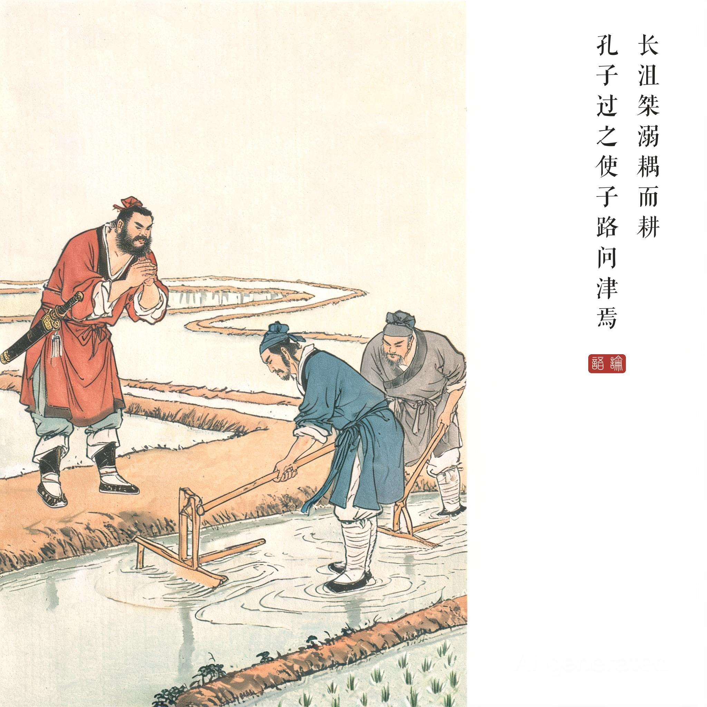
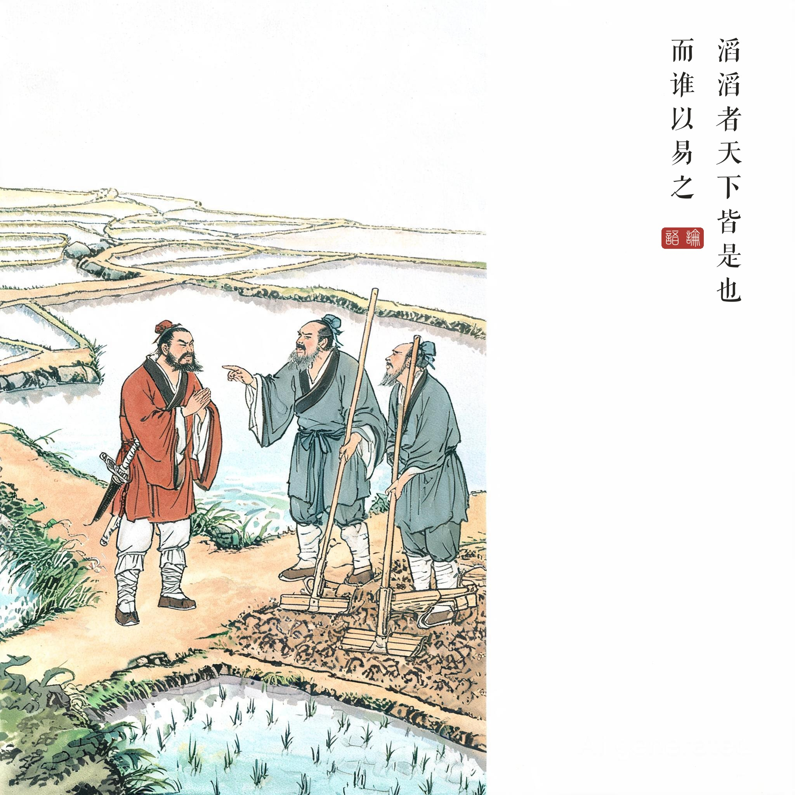
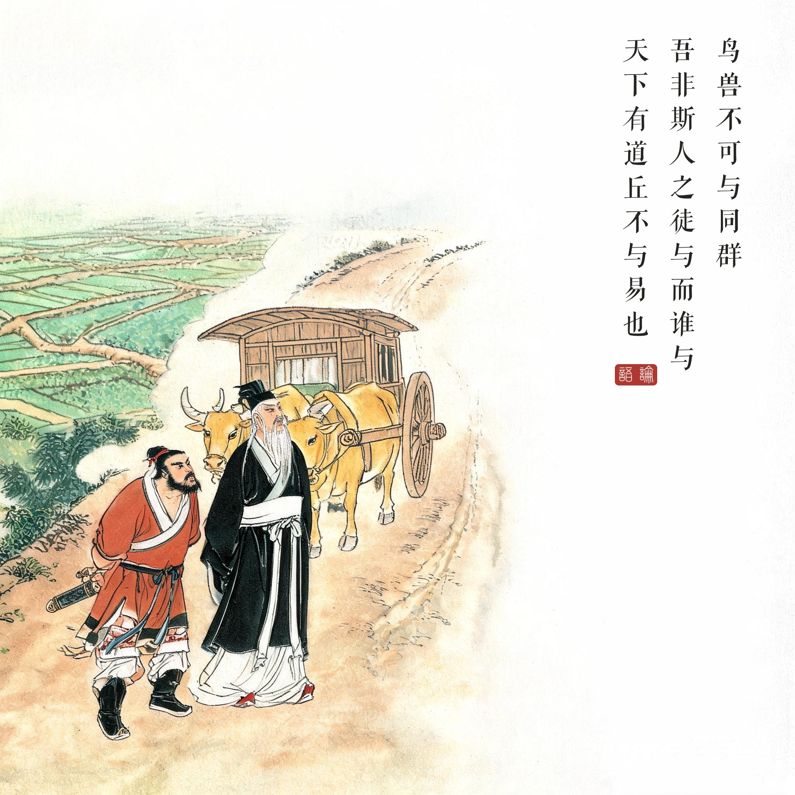

《论语 · 微子第十八》。长沮、桀溺为隐士，佚其名；津，渡口。事在孔子自楚返蔡途中。
（据 daizhigev20《论语》底本节录，题款诸句见组画清单）
孔子一行路上，长沮、桀溺并肩耕田。孔子让子路去问渡口。长沮反问：那个执辔的是谁？——是鲁孔丘。是鲁孔丘吗？是。——那他该知道渡口在哪了（讥其周游列国，自己早有方向）。
桀溺不答津事，反劝子路：天下大乱如滔滔洪水，谁能改变？与其跟着避人之士（择地而处的孔子），不如跟着我们避世之士。子路回报。夫子怃然：人不能与鸟兽为群——我不与世人在一起，与谁在一起？若天下有道，我也就不必来改变它了。
避人与避世之辨。孔子被称"避人之士"——总在挑选可以共事的君臣；桀溺们则"避世"——干脆退出。夫子的回答是儒家的根本立场：价值只能在人间实现，逃逸等于放弃责任。"天下有道，丘不与易也"——我改造世界，正因为它有病；它若已好，何须我来。
问津的双重意味。问津字面是问渡口，实为问人生的路——隐士没有回答渡口在哪，因为在他的哲学里渡口根本不存在。后世"指点迷津""无人问津"皆典出于此；"沮溺"从此成为隐逸传统的代称之一。
读画小识。第一幅田陌问路：隐士耕作不辍——问路者拱手而立、被问者目不离田，一个画面的姿势差就是两种人生态度；第三幅夫子负手远望：怅然与坚定并存——"怃然"是全章最深的表情，画中以背影与远田的关系呈现。